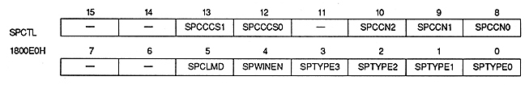

Sprite color calculation condition bit : Sprite color calculation condition bit
| SPWINEN | Process |
| 0 | Do not use sprite window |
| 1 | Use sprite window |
This bit is valid only when the sprite color mode is mode 0 and the sprite type is type 2-7.
∙ When this bit is 1, MSB shadow cannot be used because the most significant bit of the sprite frame buffer is used as the bit for the sprite window. For details on shadows, refer to "14.1 Shadow Processing".
∙ When the SPCLMD bit is set to 1, do not set this bit to 1.